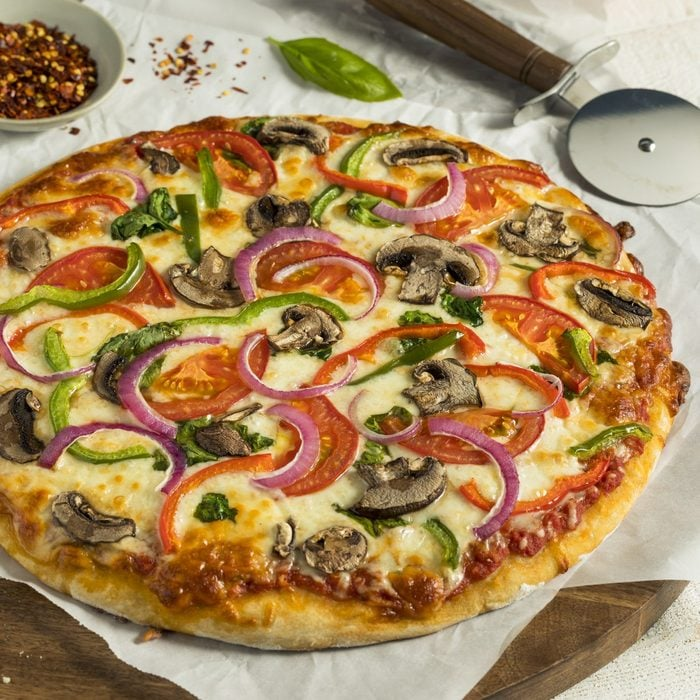

Pizza · Vegetariana
Por Parra Francys · 6 de mayo de 2026
¿Sabías que algunas de las pizzas más sabrosas del mundo no llevan carne ni lácteos tradicionales? Lo curioso es que muchas personas creen que la pizza vegetariana es "aburrida", pero la historia nos dice exactamente lo contrario: las recetas italianas más antiguas nacieron sin carne, impulsadas por la creatividad de cocineros que convertían los ingredientes del huerto y el mar en obras maestras.
En Katané Pizza llevamos tiempo observando cómo crece el interés por las opciones vegetarianas y veganas entre nuestros comensales. Por eso preparamos esta guía completa: para ayudarte a elegir bien, entender qué hace a una pizza vegetariana realmente buena, y descubrir cuál es la opción perfecta para ti en nuestro menú.
Más de lo que imaginas. La pizza nació en Nápoles como comida de pobres: masa, tomate y lo que hubiera disponible. La mozzarella era un lujo; la carne, una rareza. La Marinara —tomate, ajo, orégano y aceite— no lleva ningún producto animal y es considerada la pizza más antigua que existe. La Margherita agrega mozzarella pero no carne. Ambas son, en esencia, propuestas vegetarianas.
Sicilia, donde tiene sus raíces Katané, tiene una tradición vegetal aún más rica. La influencia árabe trajo berenjenas, alcaparras, pasas y piñones a la cocina siciliana. Ingredientes como la caponata o las melanzane alla parmigiana son iconos culinarios sin una sola proteína animal. La pizza siciliana heredó esa riqueza vegetal.
El error más común al hacer pizza vegetariana es tratar las verduras como sustitutos de la carne. Una pizza sin salchicha no es una pizza a la que "le quitaron algo": es una pizza con una identidad propia. Los mejores resultados se logran cuando el topping vegetal se elige por sus propiedades específicas: el umami de un champiñón asado, la acidez de una aceituna kalamata, el dulzor concentrado de un tomate cherry al horno.
Sin el peso proteico de la carne, los ingredientes vegetales deben aportar texturas contrastantes. Algo crujiente (pimientos asados, nueces, pan rallado tostado), algo cremoso (queso de cabra, berenjena asada, puré de alcachofas) y algo fresco (rúcula, albahaca, tomate fresco). Cuando ese equilibrio está bien pensado, la pizza vegetariana es culinariamente más compleja que muchas con carne.
Una pizza de carne puede permitirse una masa mediocre porque los sabores intensos del embutido o el pollo la compensan. En una pizza vegetariana, la masa tiene que brillar por sí sola. La fermentación lenta de 48 a 72 horas que usamos en Katané es especialmente relevante aquí: aporta esa complejidad aromática que hace que cada mordida valga la pena, incluso antes de que entren los toppings.
Si nunca has pedido una pizza vegetariana, empieza por la Margherita. Tomate, mozzarella, albahaca fresca. Parece simple, pero cuando los tres ingredientes son de primera calidad y la masa está bien trabajada, el resultado es una demostración de por qué la sencillez italiana tiene tanta fuerza. En Katané, esta pizza es una de las más pedidas, por algo será.
Cuatro quesos seleccionados, base blanca sin tomate, y una textura untuosa que se funde con el mordisco de la masa. Esta pizza es intensamente vegetal —no lleva nada de carne— y es absolutamente satisfactoria. Si alguien te dice que sin carne no se queda lleno, esta pizza puede cambiarle la perspectiva.
Los champiñones asados tienen algo extraordinario: producen glutamato de forma natural, el mismo compuesto que le da sabor intenso a la carne. Una pizza de champiñones con un buen aceite de trufa o con champiñones mixtos (portobello, shiitake, champignon) puede ser tan profunda y satisfactoria como cualquier pizza con embutido.
En Katané incorporamos ingredientes de temporada a nuestras pizzas especiales. Berenjena asada con ricotta, espinaca con ajo y piñones, pimientos caramelizados con aceitunas: son combinaciones que aparecen en nuestra carta según la disponibilidad. Pregunta qué hay de nuevo cuando visites alguna de nuestras sucursales.
Una pizza vegana elimina todos los productos de origen animal, incluyendo el queso. Esto puede sonar restrictivo, pero la cocina siciliana ofrece una respuesta elegante: la Marinara. Tomate San Marzano, ajo laminado, orégano seco, aceite de oliva extra virgen y sal. Sin queso, sin carne, sin compromisos. Esta pizza existe desde el siglo XVIII y sigue siendo perfecta.
Más allá de la Marinara, una pizza vegana de calidad puede construirse sobre:
Si te interesa una opción completamente vegana, te invitamos a hablar con nuestro equipo cuando visites Katané. Podemos orientarte y adaptar opciones del menú según tu dieta.
Una pizza con buena masa, queso de calidad y toppings vegetales generosos es perfectamente saciante. El problema no es la falta de carne: muchas veces es la falta de cantidad o de una masa bien hidratada que da cuerpo al bocado.
Este mito nació de las pizzas vegetarianas industriales: pimientos de lata, champiñones aguados, queso plástico. Una pizza vegetariana artesanal, con vegetales frescos tratados con cuidado, es cualquier cosa menos aburrida. Suele ser la opción más delicada y técnicamente más interesante del menú.
En Katané, muchos de nuestros comensales más carnívoros piden la Margherita o la Quattro Formaggi con la misma frecuencia que sus pizzas favoritas con carne. La buena comida no tiene etiquetas dietéticas.
La Margherita gana por amplio margen. No porque sea la más elaborada, sino porque cuando los ingredientes son buenos —masa lenta, tomate con carácter, mozzarella fresca, albahaca del día— no necesita nada más. Es la pizza que más pedimos recomendar a quien viene por primera vez, vegetariano o no.
La segunda más pedida entre las opciones sin carne es la Quattro Formaggi. Si eres amante del queso, ya sabes cuál pedir.
¿Te animamos a descubrirla en tu próxima visita? Tenemos tres sucursales en Ciudad de Panamá: El Cangrejo, San Francisco y Costa del Este. Y si tienes dudas sobre qué pedir o quieres saber más sobre las opciones vegetarianas del día, nuestro equipo estará encantado de orientarte.
¿Te gustó lo que leíste?
Las palabras saben bien, pero nuestra cocina sabe mejor.